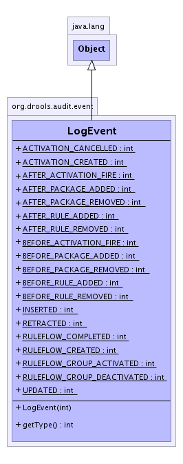

org.drools.audit.event
Class LogEvent
java.lang.Object
 org.drools.audit.event.LogEvent
org.drools.audit.event.LogEvent
- Direct Known Subclasses:
- ActivationLogEvent, ObjectLogEvent, RuleBaseLogEvent, RuleFlowGroupLogEvent, RuleFlowLogEvent
public class LogEvent
- extends java.lang.Object
An event logged by the WorkingMemoryLogger.
It is a snapshot of the event as it was thrown by the working memory.
-
- 
|
Constructor Summary |
LogEvent(int type)
Creates a new log event. |
|
Method Summary |
int |
getType()
Returns the type of the log event as defined in this class. |
| Methods inherited from class java.lang.Object |
clone, equals, finalize, getClass, hashCode, notify, notifyAll, toString, wait, wait, wait |
INSERTED
public static final int INSERTED
- See Also:
- Constant Field Values
UPDATED
public static final int UPDATED
- See Also:
- Constant Field Values
RETRACTED
public static final int RETRACTED
- See Also:
- Constant Field Values
ACTIVATION_CREATED
public static final int ACTIVATION_CREATED
- See Also:
- Constant Field Values
ACTIVATION_CANCELLED
public static final int ACTIVATION_CANCELLED
- See Also:
- Constant Field Values
BEFORE_ACTIVATION_FIRE
public static final int BEFORE_ACTIVATION_FIRE
- See Also:
- Constant Field Values
AFTER_ACTIVATION_FIRE
public static final int AFTER_ACTIVATION_FIRE
- See Also:
- Constant Field Values
RULEFLOW_CREATED
public static final int RULEFLOW_CREATED
- See Also:
- Constant Field Values
RULEFLOW_COMPLETED
public static final int RULEFLOW_COMPLETED
- See Also:
- Constant Field Values
RULEFLOW_GROUP_ACTIVATED
public static final int RULEFLOW_GROUP_ACTIVATED
- See Also:
- Constant Field Values
RULEFLOW_GROUP_DEACTIVATED
public static final int RULEFLOW_GROUP_DEACTIVATED
- See Also:
- Constant Field Values
BEFORE_PACKAGE_ADDED
public static final int BEFORE_PACKAGE_ADDED
- See Also:
- Constant Field Values
AFTER_PACKAGE_ADDED
public static final int AFTER_PACKAGE_ADDED
- See Also:
- Constant Field Values
BEFORE_PACKAGE_REMOVED
public static final int BEFORE_PACKAGE_REMOVED
- See Also:
- Constant Field Values
AFTER_PACKAGE_REMOVED
public static final int AFTER_PACKAGE_REMOVED
- See Also:
- Constant Field Values
BEFORE_RULE_ADDED
public static final int BEFORE_RULE_ADDED
- See Also:
- Constant Field Values
AFTER_RULE_ADDED
public static final int AFTER_RULE_ADDED
- See Also:
- Constant Field Values
BEFORE_RULE_REMOVED
public static final int BEFORE_RULE_REMOVED
- See Also:
- Constant Field Values
AFTER_RULE_REMOVED
public static final int AFTER_RULE_REMOVED
- See Also:
- Constant Field Values
LogEvent
public LogEvent(int type)
- Creates a new log event.
- Parameters:
type - The type of the log event.
getType
public int getType()
- Returns the type of the log event as defined in this class.
- Returns:
- The type of the log event.